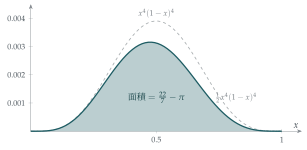

STEP I 1997、第6問
先に進む前に問題を読んでおこう。問題は STEP Support Programme の問題データベースにある： step.maths.org/questions/97-s1-q6
導入
何世代にもわたって、生徒たちは \(\pi\) は「だいたい \(\frac{22}{7}\)」だと教わってきた。これは非常によい近似（approximation）である。実際、\(\frac{22}{7} = 3.142857\ldots\)、\(\pi = 3.141592\ldots\) である。では、\(\frac{22}{7}\) は大きすぎるのか、それとも小さすぎるのか。そして、誰かが計算してくれた \(\pi\) の数字の並びを単に調べるのではなく、それを証明できるだろうか。
この問題は、数学全体の中でも最も美しい証明の一つを与えてくれる。正の関数の積分はただ一つで、それゆえ正でなければならないが、その値がちょうど \(\frac{22}{7} - \pi\) に等しいことがわかるのである。被積分関数（integrand）が正であるから積分も正であり、したがって \(\frac{22}{7} > \pi\) となる。証明全体はわずか数行に収まり、あまりに鮮やかなので、数学 T シャツのパズルとして登場するほどである。
取りかかる前に
なぜ \(\int_0^1 \frac{\text{多項式}}{1+x^2}\,\mathrm{d}x\) から \(\pi\) が出てくるのだろうか。この形の簡単な積分のうち、それ単独で \(\pi\) を与えるものはどれか。
\(\int_0^1 \frac{\mathrm{d}x}{1+x^2} = \arctan 1 = \frac\pi4\) である。多項式（polynomial）を \(1 + x^2\) で割ると、多項式の商（積分すると有理数（rational number）になる）と、定数の余り（remainder）を \(1 + x^2\) で割ったもの（積分すると \(\pi\) の有理数倍になる）の和が得られる。問題の最初の部分は、まさにこの割り算を行うことを求めている。
順を追って解く
段階 1 多項式の割り算
まず展開する。\((1 - x)^4 = 1 - 4x + 6x^2 - 4x^3 + x^4\) であるから、 \[x^4(1-x)^4 = x^8 - 4x^7 + 6x^6 - 4x^5 + x^4.\]
筆算による割り算か係数比較（comparing coefficients）によって、\(x^2 + 1\) で割れ。余りは何か。
\((a_6x^6 + \cdots + a_0)(x^2 + 1) + b\) の係数を高次の項から比較すると、\(a_6 = 1\)、\(a_5 = -4\)、\(a_4 + a_6 = 6\) より \(a_4 = 5\)、\(a_3 + a_5 = -4\) より \(a_3 = 0\)、\(a_2 + a_4 = 1\) より \(a_2 = -4\)、\(a_1 + a_3 = 0\) より \(a_1 = 0\)、\(a_0 + a_2 = 0\) より \(a_0 = 4\)、そして最後に \(a_1 = 0\)（\(x\) の係数）と \(a_0 + b = 0\) より \(b = -4\) となる。すなわち、 \[x^4(1-x)^4 = (x^6 - 4x^5 + 5x^4 - 4x^2 + 4)(x^2 + 1) - 4.\]
段階 2 積分
\(1 + x^2\) で割ると、 \[\frac{x^4(1-x)^4}{1+x^2} = x^6 - 4x^5 + 5x^4 - 4x^2 + 4 - \frac{4}{1+x^2},\] であるから、 \[\int_0^1 \frac{x^4(1-x)^4}{1+x^2}\,\mathrm{d}x = \frac17 - \frac46 + \frac55 - \frac43 + 4 - 4\cdot\frac\pi4 = \frac17 - \frac23 + 1 - \frac43 + 4 - \pi.\] ここで \(-\frac23 - \frac43 = -2\) であるから、有理数の部分は \(\frac17 + 3 = \frac{22}{7}\) となり、積分の値は \(\frac{22}{7} - \pi\) である。■
段階 3 積分の評価
被積分関数は \((0, 1)\) で正であるから、直ちに \(\frac{22}{7} > \pi\) が得られる。\(\pi\) の下界（lower bound）を得るには、積分の上界が必要である。\([0, 1]\) において \(\frac{1}{1+x^2}\) はどこまで大きくなりうるか。
\([0, 1]\) において \(1 \leq 1 + x^2 \leq 2\) であるから、 \[\tfrac12 x^4(1-x)^4 \leq \frac{x^4(1-x)^4}{1+x^2} \leq x^4(1-x)^4,\] であり、端点を除いて狭義の不等号が成り立つ。
\(\int_0^1 x^4(1-x)^4\,\mathrm{d}x\) を計算し、証明を完成させよ。
展開式を項別に積分すると、 \[\int_0^1 x^4(1-x)^4\,\mathrm{d}x = \frac19 - \frac48 + \frac67 - \frac46 + \frac15 = \frac{1}{630}.\] （公分母 \(2520\) で通分すると、\(280 - 1260 + 2160 - 1680 + 504 = 4\) であり、\(\frac{4}{2520} = \frac{1}{630}\) となる。）したがって、 \[0 < \frac{22}{7} - \pi < \frac{1}{630},\] すなわち \(\frac{22}{7} > \pi > \frac{22}{7} - \frac{1}{630}\) である。■
数値的には \(\frac{22}{7} - \frac{1}{630} = 3.14127\ldots\) であるから、\(3.1412 < \pi < 3.1429\) が証明されたことになる。さらに左側の不等式も用いると \(\frac{1}{1260} < \frac{22}{7} - \pi\) となり、上界は \(\pi < 3.14207\) に改善される。

振り返り
正値性が不等式を証明する。正の関数の積分は正である。積分が \(\frac{22}{7} - \pi\) であるとわかった時点で、不等式は直ちに従った。
小さな被積分関数、鋭い評価。因子 \(x^4(1-x)^4\) は \([0, 1]\) 上で非常に小さく（高々 \(\frac{1}{256}\)）、そのため積分は小さくなり、評価も鋭くなる。
有理数と \(\pi\) の倍数の和。第 2.9 節 と同様に、「有理数 \(+\) 定数の有理数倍」という形の積分が小さければ、その定数のよい有理数近似が得られる。
背後にある数学
アルキメデス（Archimedes）は紀元前 250 年頃、円に内接および外接する \(96\) 角形の周の長さを計算することによって \(\frac{223}{71} < \pi < \frac{22}{7}\) を証明した（第 2.5 節 の多角形と比較せよ）。積分による証明はずっと新しい。これは D. P. Dalzell によって 1944 年に発表され、1968 年にアメリカの学部生向けのパットナム数学競技会（Putnam competition）で問題として出題されたことで有名になった。その魅力は、数値計算をまったく必要としない点にある。不等式 \(\frac{22}{7} > \pi\) は、正の関数の積分は正であるという事実からおのずと導かれるのである。
同じ考え方によるさらによい近似
この方法は一般化できる。\(x^4(1-x)^4\) の代わりに \(x^8(1-x)^8\) を用いると、同様の割り算により \[\int_0^1 \frac{x^8(1-x)^8}{1+x^2}\,\mathrm{d}x = 4\pi - \frac{188684}{15015},\] が得られ、これから \(\pi > \frac{47171}{15015} = 3.1415917\ldots\) が証明される。これは有効数字（significant figures）6 桁まで正しい。2009 年に Stephen Lucas は、被積分関数が非負であるこの種の積分の族を見いだし、有効数字 7 桁まで正しい \(\frac{355}{113}\) を含む、他の有名な近似についての不等式を証明した。
近似と無理性
なぜ \(\pi\) は \(\frac{22}{7}\) や \(\frac{355}{113}\) のような非常によい分数近似をもつのだろうか。すべての無理数（irrational number）には、それとの差が \(\frac{1}{q^2}\) 以内である分数 \(\frac pq\) が無限に多く存在する。そして \(\pi\) の場合は、その連分数（continued fraction）\([3; 7, 15, 1, 292, \ldots]\) が大きな項 \(292\) を含むため、たまたま早い段階で格別によい近似がいくつか現れるのである（第 2.2 節 を参照）。この問題に現れるような積分をどんどん小さくしていくことは、ある数が分数によってあまりよく近似できないこと、したがって無理数であることを示す証明の出発点となる。アイヴァン・ニーヴン（Ivan Niven）による \(\pi\) が無理数であることの有名な 1 ページの証明（1947 年）では、\(\frac{x^n(1-x)^n}{n!}\sin(\pi x)\) の積分が用いられている。これは 第 2.9 節 に現れた積分の三角関数版である。
思考のスキル
\(A > B\) を証明するには、積分が \(A - B\) となる正の関数を見つけよ。
これにより、不等式は一つの恒等式と一つの自明な事実に置き換わる。これは解析学で最も有用な技法の一つであり、積分の代わりに平方和を用いた同じ考え方によって、第 3.2 節 では相加平均・相乗平均の不等式（AM–GM）を証明した。
次の一歩
数値を確かめる。\(\frac{22}{7} - \pi\) を有効数字 4 桁で計算し、それが \(\frac{1}{1260}\) と \(\frac{1}{630}\) の間にあることを確かめよ。
ベータ積分。公式 \(\int_0^1 x^n(1-x)^n\,\mathrm{d}x = \frac{(n!)^2}{(2n+1)!}\)（第 4.4 節 で証明した）を用いて、\(\int_0^1 x^4(1-x)^4\,\mathrm{d}x = \frac{1}{630}\) を確かめよ。
下からの近似。 \[\int_0^1 \frac{x(1-x)^2}{1+x^2}\,\mathrm{d}x = \frac\pi2 - \frac32 \quad\text{および}\quad \int_0^1 \frac{x^2(1-x)^4}{1+x^2}\,\mathrm{d}x = \pi - \frac{47}{15},\] を示し、\(\pi > 3\) および \(\pi > \frac{47}{15}\) を導け。これらが \(\frac{22}{7}\) より精度が低いのはなぜか。
さらに進んで。 発展 上に挙げた \(\int_0^1 \frac{x^8(1-x)^8}{1+x^2}\,\mathrm{d}x\) に関する等式を確かめよ。（割り算は数式処理システムに任せてよい。要点は、余りが \(16\) となり、\(4\pi\) が得られることを見ることである。）
さらに学ぶために
Petr Beckmann, A History of \(\pi\)（St Martin’s Press）。『π の歴史』。アルキメデスの多角形による方法の詳細をはじめ、多くの話題を扱う。
Stephen Lucas, “Approximations to \(\pi\) derived from integrals with nonnegative integrands”, American Mathematical Monthly 116 (2009)。非負の被積分関数をもつ積分から導かれる \(\pi\) の近似についての論文。短く読みやすい。
Ivan Niven, Irrational Numbers（Mathematical Association of America）。『無理数』。\(\pi\) が無理数であることのニーヴンによる証明を収録している。